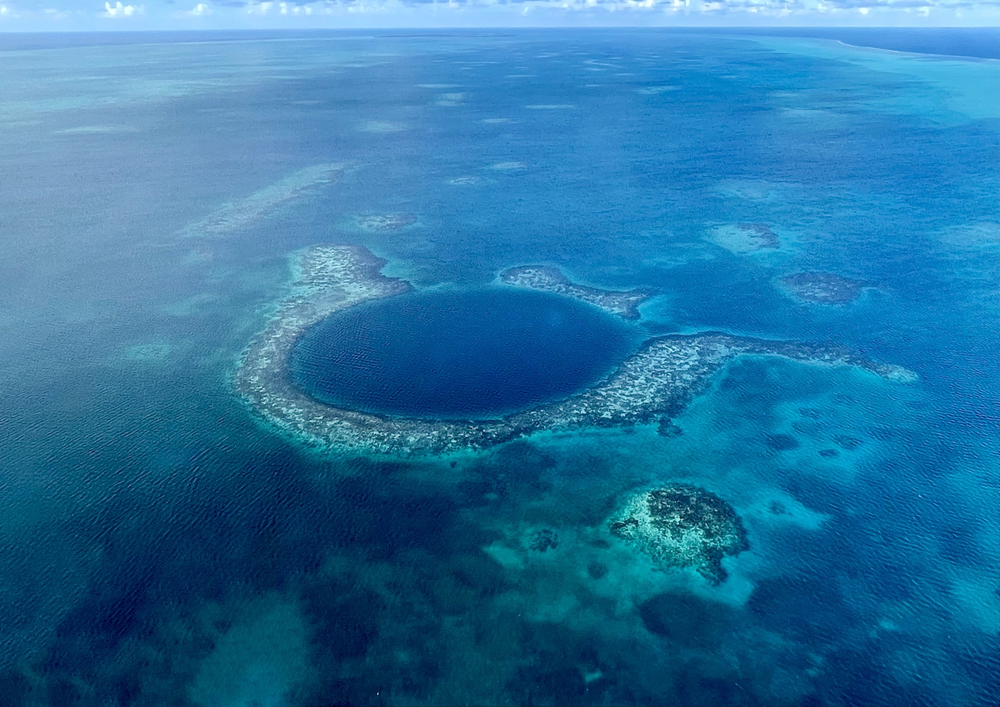

Monaka
Traveler · Rider · Former Costa Rica Resident
中南米に数年いて、日本ではバイクで各地を走って、気づいたら旅の記録がたまっていた。
決めすぎない旅が、だいたい一番おもしろい。

中南米の路地、北海道の海岸線、カリブ海。
決めすぎない旅の記録を、写真と一緒に残しています。
中南米に数年いて、日本ではバイクで各地を走って、気づいたら旅の記録がたまっていた。
決めすぎない旅が、だいたい一番おもしろい。
旅の記録を一覧で
All Stories